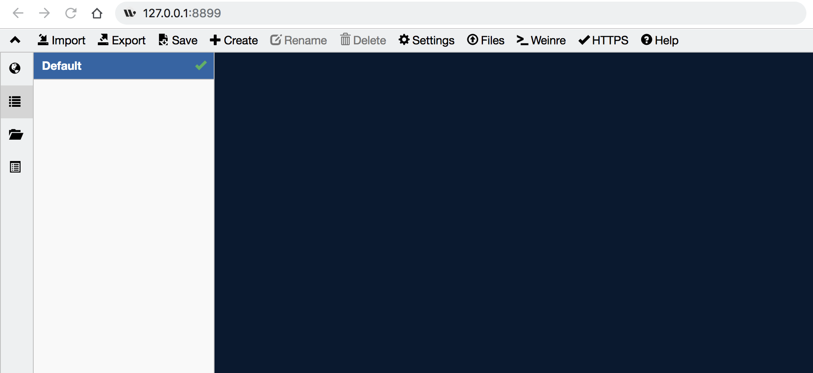

whistle
参考 whistle中文文档
安装
Node
matman 是基于 Node 来实现的，因此需要在本机安装 Node 。
为了获得更好的性能，推荐安装最新版本的 Node，进入 https://nodejs.org/ 官网，选择 LTS 版本的 Node 安装即可。
安装完Node后，执行下面命令，查看当前Node版本：
$ node -v
v4.4.0
如果能正常输出Node的版本号，表示Node已安装成功(Windows系统可能需要重新打开cmd)。
whistle
安装方式如下：
# 安装tnpm
npm install @tencent/tnpm -g --registry=http://r.tnpm.oa.com --no-proxy
# 安装whistle
tnpm install -g whistle @tencent/whistle.txpac
安装完whistle后，执行下面命令，查看当前whistle版本：
$ w2 -V
1.15.10
如果能正常输出whistle的版本号，表示whistle已安装成功(Windows系统可能需要重新打开cmd)。
运行
在终端/控制台下运行如下命令可以启动whistle
hebly723-MC1:matman-demo hebly723$ w2 start
[i] whistle@1.15.10 restarted
[i] 1. use your device to visit the following URL list, gets the IP of the URL you can access:
http://127.0.0.1:8899/
http://10.64.66.73:8899/
Note: If all the above URLs are unable to access, check the firewall settings
For help see https://github.com/avwo/whistle
[i] 2. configure your device to use whistle as its HTTP and HTTPS proxy on IP:8899
[i] 3. use Chrome to visit http://local.whistlejs.com/ to get started
默认情况下，whistle启动在 http://127.0.0.1:8899/ ，打开该链接，可以看到如下界面：

如果想换其余的端口比如8080打开whistle的话，可以使用以下的命令
w2 restart -p 8080